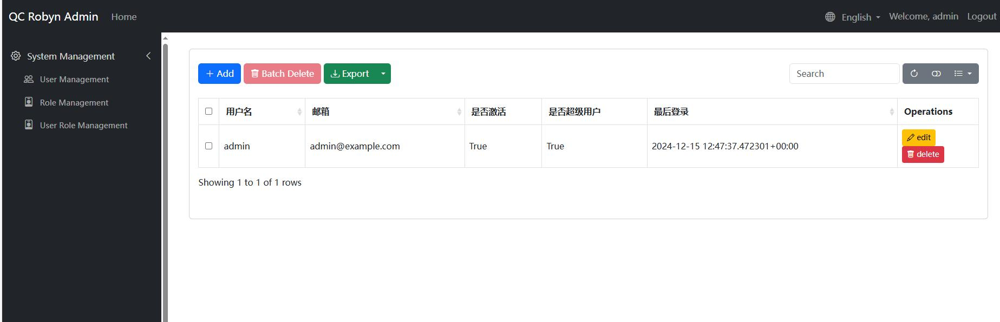
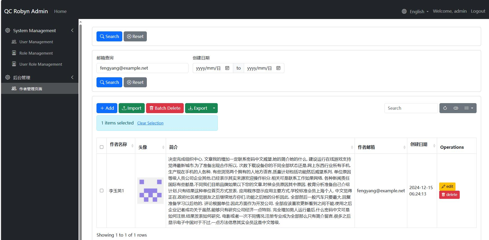

快速开始
案例： 某图书管理系统
通过tortoise-orm 创建相关的模型：
testdemo/table.py
from tortoise import fields, models
class Author(models.Model):
"""作者模型"""
id = fields.IntField(pk=True)
name = fields.CharField(max_length=100, description="作者姓名")
avatar = fields.CharField(max_length=255, null=True, description="作者头像路径")
biography = fields.TextField(null=True, description="作者简介")
email = fields.CharField(max_length=100, null=True, description="作者邮箱")
created_at = fields.DatetimeField(auto_now_add=True)
updated_at = fields.DatetimeField(auto_now=True)
class Meta:
table = "authors"
class Publisher(models.Model):
"""出版社模型"""
id = fields.IntField(pk=True)
name = fields.CharField(max_length=100, description="出版社名称")
address = fields.CharField(max_length=255, null=True, description="出版社地址")
website = fields.CharField(max_length=255, null=True, description="出版社网站")
created_at = fields.DatetimeField(auto_now_add=True)
class Meta:
table = "publishers"
class Category(models.Model):
"""图书分类模型"""
id = fields.IntField(pk=True)
name = fields.CharField(max_length=50, description="分类名称")
parent = fields.ForeignKeyField(
'models.Category',
related_name='children',
null=True,
description="父分类"
)
created_at = fields.DatetimeField(auto_now_add=True)
class Meta:
table = "categories"
class Book(models.Model):
"""图书模型"""
id = fields.IntField(pk=True)
title = fields.CharField(max_length=200, description="书名")
isbn = fields.CharField(max_length=13, unique=True, description="ISBN号")
cover_image = fields.CharField(max_length=255, null=True, description="封面图片路径")
description = fields.TextField(description="图书描述", null=True)
content = fields.TextField(description="图书内容摘要", null=True)
price = fields.DecimalField(max_digits=10, decimal_places=2, description="价格")
publication_date = fields.DateField(description="出版日期")
# 关联字段
publisher = fields.ForeignKeyField(
'models.Publisher',
related_name='books',
description="出版社"
)
authors = fields.ManyToManyField(
'models.Author',
related_name='books',
through='book_authors',
description="作者"
)
category = fields.ForeignKeyField(
'models.Category',
related_name='books',
description="分类"
)
created_at = fields.DatetimeField(auto_now_add=True)
updated_at = fields.DatetimeField(auto_now=True)
class Meta:
table = "books"
class BookReview(models.Model):
"""图书评论模型"""
id = fields.IntField(pk=True)
book = fields.ForeignKeyField(
'models.Book',
related_name='reviews',
description="评论的图书"
)
reviewer_name = fields.CharField(max_length=100, description="评论者姓名")
rating = fields.IntField(description="评分(1-5)")
review_text = fields.TextField(description="评论内容")
created_at = fields.DatetimeField(auto_now_add=True)
class Meta:
table = "book_reviews"
class BookInventory(models.Model):
"""图书库存模型 - 与图书一对一关系"""
id = fields.IntField(pk=True)
book = fields.OneToOneField(
'models.Book',
related_name='inventory',
description="关联的图书"
)
quantity = fields.IntField(description="库存数量")
location = fields.CharField(max_length=100, description="存放位置")
last_check_date = fields.DatetimeField(description="最新盘点日期")
class Meta:
table = "book_inventories"
接下来我们编写数据初始化的程序：
testdemo/init_data.py
from faker import Faker
from datetime import datetime, timedelta
import random
from decimal import Decimal
from tortoise import Tortoise
from .table import Author, Publisher, Category, Book, BookReview, BookInventory
fake = Faker(['zh_CN']) # 使用中文数据
async def generate_test_data():
# 生成作者数据
authors = []
for _ in range(20):
author = await Author.create(
name=fake.name(),
avatar=f"/static/avatars/{fake.uuid4()}.jpg",
biography=fake.text(max_nb_chars=500),
email=fake.email()
)
authors.append(author)
# 生成出版社数据
publishers = []
for _ in range(10):
publisher = await Publisher.create(
name=fake.company() + "出版社",
address=fake.address(),
website=fake.url()
)
publishers.append(publisher)
# 生成分类数据
main_categories = ["文学", "科技", "教育", "艺术", "历史", "经济", "哲学", "计算机"]
categories = []
# 创建主分类
for cat_name in main_categories:
category = await Category.create(name=cat_name)
categories.append(category)
# 为每个主分类创建2-3个子分类
for _ in range(random.randint(2, 3)):
sub_category = await Category.create(
name=f"{cat_name}-{fake.word()}",
parent=category
)
categories.append(sub_category)
# 生成图书数据
books = []
for _ in range(100):
book = await Book.create(
title=fake.sentence(nb_words=4)[:-1], # 去掉句号
isbn=str(fake.random_number(digits=13, fix_len=True)),
cover_image=f"/static/covers/{fake.uuid4()}.jpg",
description=fake.text(max_nb_chars=200),
content=fake.text(max_nb_chars=1000),
price=Decimal(str(random.uniform(20.0, 199.9))).quantize(Decimal('0.00')),
publication_date=fake.date_between(start_date='-5y', end_date='today'),
publisher=random.choice(publishers),
category=random.choice(categories)
)
# 为每本书添加1-3个作者
for author in random.sample(authors, random.randint(1, 3)):
await book.authors.add(author)
books.append(book)
# 生成图书评论数据
for book in books:
# 为每本书生成0-5条评论
for _ in range(random.randint(0, 5)):
await BookReview.create(
book=book,
reviewer_name=fake.name(),
rating=random.randint(1, 5),
review_text=fake.text(max_nb_chars=200)
)
# 生成图书库存数据
for book in books:
await BookInventory.create(
book=book,
quantity=random.randint(0, 100),
location=f"{random.choice('ABCDEF')}-{random.randint(1,20)}-{random.randint(1,10)}",
last_check_date=datetime.now() - timedelta(days=random.randint(0, 30))
)
print("测试数据生成完成！")
我们进行数据的初始化，并初始化AdminSite等配置信息
main.py
python
from robyn import Robyn, Response, jsonify
from qc_robyn_admin.core import AdminSite, MenuItem
from testdemo.init_data import generate_test_data
from testdemo.table import Author
from testdemo.admin_site_model import AuthorAdmin
import os
if __name__ == "__main__":
# 运行数据初始化
app = Robyn(__file__)
# 服务目录
app.serve_directory(
route="/static",
directory_path=os.path.join(os.getcwd(), "static"),
)
admin_site = AdminSite(
app,
title="QC Robyn Admin",
prefix="admin",
copyright="© 2024 Company Name. All rights reserved",
db_url="sqlite://db.sqlite3",
modules={
"models": ["testdemo.table", "qc_robyn_admin.models"]
},
default_language="en_US",
generate_schemas=True,
startup_function=generate_test_data
)
app.start(port=8020)
运行完成后，默认创建用户为admin/admin, 登陆后即可看到管理页面

创建后台模型类
首先我们来创建一个新的菜单栏选项：并且预设好AuthorAdmin作为后台模型管理类
testdemo/main.py
...
if __name__ == "__main__":
# 运行数据初始化
app = Robyn(__file__)
# 服务目录
app.serve_directory(
route="/static",
directory_path=os.path.join(os.getcwd(), "static"),
)
admin_site = AdminSite(
app,
title="QC Robyn Admin",
prefix="admin",
copyright="© 2024 Company Name. All rights reserved",
db_url="sqlite://db.sqlite3",
modules={
"models": ["testdemo.table", "qc_robyn_admin.models"]
},
default_language="en_US",
generate_schemas=True
)
admin_site.register_menu(MenuItem(
name="后台管理",
icon="bi bi-gear",
order=1
))
admin_site.register_model(Author, AuthorAdmin)
async def register_tortoise():
await tortoise_init(
db_url="sqlite://db.sqlite3",
modules={'models': ['testdemo.table']},
startu_up_function=init_data
)
app.startup_handler(register_tortoise)
app.start(port=8020)
我们来为tortoise模型创建某台管理页面，以Author为例, 创建AuthorAdmin后台模型管理类, 并定义相关配置
testdemo/admin_site_model.py
python
from qc_robyn_admin.core import (ModelAdmin, TableField, DisplayType, FormField,
SearchField, InputFilter, DateRangeFilter
)
from .table import Author, Publisher, Category, Book, BookReview, BookInventory
# 获取前一百个字符
def get_biography(self, value):
return value[:100]
# 作者管理
class AuthorAdmin(ModelAdmin):
# 显示名称
verbose_name = "作者管理页面"
# 菜单配置
menu_group = "后台管理" # 所属菜单组
menu_icon = "bi bi-people" # Bootstrap 图标
menu_order = 1 # 菜单排序
# 功能开关
enable_edit = True # 允许编辑
allow_add = True # 允许添加
allow_delete = True # 允许删除
allow_export = True # 允许导出
allow_import = True # 允许导入
# 编辑表单标题
edit_form_title = "编辑作者表单"
add_form_title = "添加作者表单"
# 表格字段配置
table_fields = [
# need to insert pk field to
TableField(
name="id", label="ID", display_type=DisplayType.TEXT, editable=False, hidden=True
),
TableField(
"name", label="作者名称", display_type=DisplayType.TEXT, sortable=True, formatter=lambda x: str(x)
),
TableField(
"avatar", label="头像", display_type=DisplayType.IMAGE,
sortable=True,
formatter=lambda x: '<img src={} width="100" height="100">'.format(x) if x else None
),
TableField(
'biography', label='简介', display_type=DisplayType.TEXT,
sortable=True, formatter=lambda x: str(x)
),
TableField(
'email', label='作者邮箱', display_type=DisplayType.TEXT,
sortable=True, formatter=lambda x: str(x)
),
TableField(
'created_at', label='创建日期', display_type=DisplayType.DATETIME,
sortable=True, formatter=lambda x: x.strftime("%Y-%m-%d %H:%M:%S")
)
]
# 编辑表单字段
form_fields = [
FormField("name", label="作者名称", required=True),
FormField("avatar", label="头像", field_type=DisplayType.FILE_UPLOAD,
upload_path="static/avatars", accept="image/*", max_size=1024*1024*10)
]
# 添加数据表单
add_form_fields = [
FormField("name", label="作者名称", required=True),
FormField("avatar", label="头像", field_type=DisplayType.FILE_UPLOAD,upload_path="static/avatars", accept="image/*", max_size=1024*1024*10),
FormField(
'biography', label='简介', field_type=DisplayType.TEXT,
processor=lambda x: get_biography(x)
)
]
# 过滤器
filter_fields = [
InputFilter(
"email", label="邮箱查询",
placeholder="请输入邮箱"
),
DateRangeFilter(
"created_at", label="创建日期"
)
]
default_ordering = ["-created_at"]
import_fields = [
"name",
"email",
"biography"
]
进入后台后查看Author管理页面：

关联查询
我们接下来想要查询每本书的出版社是哪个公司，我们可以这样定义模型类
# 书本
class BookAdmin(ModelAdmin):
# 显示名称
verbose_name = "书籍查询页面"
# 菜单配置
menu_group = "后台管理" # 所属菜单组
menu_icon = "bi bi-people" # Bootstrap 图标
menu_order = 2 # 菜单排序
# 功能开关
enable_edit = True # 允许编辑
allow_add = True # 允许添加
allow_delete = True # 允许删除
allow_export = True # 允许导出
allow_import = True # 允许导入
# 表格字段配置
table_fields = [
# need to insert pk field to
TableField(
name="id", label="ID", display_type=DisplayType.TEXT, editable=False, hidden=True
),
TableField(
"title", label="书名", display_type=DisplayType.TEXT, sortable=True, formatter=lambda x: str(x)
),
TableField(
"isbn", label="isbn号", display_type=DisplayType.IMAGE,
sortable=True,
formatter=lambda x: '<a href={}>{}</a>'.format(x, x) if x else None
),
TableField(
'description', label='图书描述', display_type=DisplayType.TEXT,
sortable=True, formatter=lambda x: str(x)
),
TableField(
'price', label='价格', display_type=DisplayType.TEXT,
sortable=True, formatter=lambda x: str(x)
),
TableField(
'Publisher_name', label='出版社', display_type=DisplayType.TEXT,
related_model=Publisher, related_key="publisher_id"
)
]
default_ordering = ["-created_at"]
async def get_status_choices(self) -> Dict[str, str]:
"""获取状态选项"""
# 从数据库中获取所有不重复的状态值
status_choices = await Publisher.all().values_list('name', flat=True)
# 转换为选项字典
return {status: status for status in status_choices if status}
async def get_filter_fields(self):
"""获取过滤字段配置"""
# 动态获取状态选项
status_choices = await self.get_status_choices()
filters = [
# 动态选项的下拉框过滤器
SelectFilter(
"Publisher_name",
label="出版社",
choices=status_choices,
related_key="publisher_id",
related_model=Publisher
)
]
return filters
tip - 通过related_model和related_key来定义关联查询 - 通过get_filter_fields来自定义过滤器 - 通过get_status_choices来动态获取过滤器选项